คู่มือลูกหนี้ สำหรับงานการเงินและบัญชี
ระบบ BKH Insight · เปิดที่ https://10.10.10.159 · ฉบับวันที่ 25 พ.ย. 2569
คู่มือนี้อธิบายงานลูกหนี้ที่การเงินทำในระบบทุกเดือน ตั้งแต่นำเข้า STM จนถึงปิดงวด ชื่อปุ่ม ชื่อเมนู และข้อความเตือนในคู่มือตรงกับที่เห็นบนหน้าจอ รูปทุกรูปถ่ายจากระบบจริง ช่องที่เป็นเลข VN/AN/HN และชื่อผู้ป่วยถูกทำให้เบลอ
1. ภาพรวมระบบลูกหนี้
ระบบตั้งลูกหนี้ให้เองทุกคืนเวลา 01:00 น. โดยอ่านจาก HOSxP
- ผู้ป่วยนอก ตั้งหนี้จากใบลูกหนี้ที่ออกใน HOSxP ใบที่ถูกยกเลิกใน HOSxP จะลงเป็นรายการ "ยกเลิก"
- ผู้ป่วยใน ตั้งหนี้เมื่อการเงินล็อกรายการของ AN แล้ว ยอดเท่าลูกหนี้สิทธิของ AN นั้น
- รายการที่ลงสมุดแล้วจะไม่ถูกแก้ทับ ถ้ายอดใน HOSxP เปลี่ยนภายหลัง ระบบลงส่วนต่างเป็นรายการใหม่ ("ปรับปรุง" "ยกเลิก" หรือ "กลับรายการ")
- บัญชีลูกหนี้ของแต่ละราย ระบบเลือกจากกลุ่มสิทธิ ผู้ป่วยนอก/ใน และหน่วยบริการประจำ ตามกติกาที่ผู้ดูแลระบบตั้งไว้ (ดูตารางกติกา)
- ต้องการยอดล่าสุดก่อนรอบกลางคืน กดปุ่ม ดึงยอดล่าสุด ที่หน้า "ลูกหนี้ตามผังบัญชี" กดซ้ำได้ รายการที่ลงแล้วจะไม่ลงซ้ำ
งานของการเงินคือ ตัดหนี้ เมื่อได้รับเงิน (จาก STM, เงินโอนเหมาจ่าย, เงินรับล่วงหน้าบัตรต่างด้าว หรือรับเงินเอง) และ ตรวจบัญชี ก่อนปิดงวดทุกเดือน
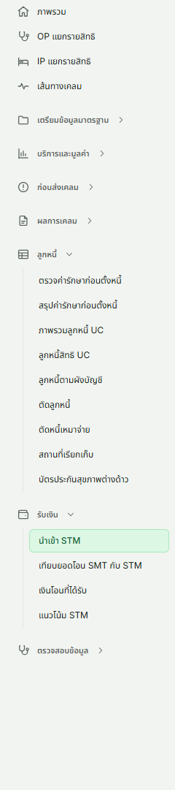
รูป 1 เมนูด้านซ้าย งานลูกหนี้อยู่ในหมวด "ลูกหนี้" และ "รับเงิน" ส่วนนำเข้า REP อยู่ในหมวด "ผลการเคลม" หน้าของผู้ดูแลระบบไม่อยู่ในเมนูนี้ เปิดจากเมนูโปรไฟล์ (กดชื่อผู้ใช้มุมล่างซ้าย) กลุ่ม "ผู้ดูแลระบบ"
ใครทำอะไร
ผู้ใช้ทุกคนที่ login ได้ทำงานประจำเดือนได้เกือบทั้งหมด งานที่เปลี่ยนกติกาหรือปิดบัญชีสงวนไว้ให้ผู้ดูแลระบบ (role admin)
| งาน | ผู้ใช้ทั่วไป | ผู้ดูแลระบบ |
|---|
| นำเข้า STM / REP, ดึงจาก SMT, เพิ่ม/แก้/ยกเลิกรายการเงินโอน | ทำได้ | ทำได้ |
| ตัดลูกหนี้ด้วย STM, ตัดหนี้เหมาจ่าย, ตัดหนี้บัตรต่างด้าว | ทำได้ | ทำได้ |
| บันทึกรับเงิน, ส่งคำขอปรับปรุงลูกหนี้ | ทำได้ | ทำได้ |
| ลบไฟล์ STM ที่นำเข้าผิด | – | เท่านั้น |
| จับคู่กองทุนใน SMT กับบัญชี | – | เท่านั้น |
| อนุมัติ/ไม่อนุมัติคำขอปรับปรุงลูกหนี้ (ต้องไม่ใช่ผู้ขอ) | – | เท่านั้น |
| กำหนดยอดเงินของชนิดบัตรต่างด้าว (แท็บ "ชนิดบัตร") | – | เท่านั้น |
| กติกาบัญชี ตั้งค่าบัญชี กลุ่มเรียกเก็บ คำนวณบัญชีใหม่ | – | เท่านั้น |
| ปิดงวด / เปิดงวด | – | เท่านั้น |
2. งานประจำเดือน ตามลำดับ
แต่ละหัวข้อบอก เมื่อไร ใครทำ ต้องทำอะไรก่อน ขั้นตอน สิ่งที่ต้องตรวจ ข้อความที่อาจเจอ สิ่งที่ห้ามทำ และการลงบัญชี
กนำเข้า STM (และ REP)
- เมื่อไร
- ทุกครั้งที่ได้ไฟล์ Statement (STM) หรือ REP ใหม่จาก e-Claim
- ใครทำ
- ผู้ใช้ทั่วไป
- ต้องทำก่อน
- ดาวน์โหลดไฟล์ STM นามสกุล
.xls และรู้วันที่ออก Statement ของไฟล์
ขั้นตอน นำเข้า STM
- เปิด รับเงิน › นำเข้า STM
- เลือก วันที่ออก STM ทุกครั้งก่อนนำเข้า ค่าที่ขึ้นมาตอนเปิดหน้า (วันนี้) ยังไม่นับว่าเลือก ปุ่มเลือกไฟล์จะกดไม่ได้และมีข้อความ
เลือกวันที่ออก STM ก่อนนำเข้า
- กด เลือกไฟล์ STM เลือกได้หลายไฟล์พร้อมกัน หรือลากไฟล์
.xls มาวางในกรอบเส้นประ
- ระบบนำเข้าทีละไฟล์และแสดงผลรายไฟล์: นำเข้าแล้ว ซ้ำ ไม่รองรับ ไม่สำเร็จ ไฟล์ที่สำเร็จบอกจำนวนรายการและยอดโอนสุทธิ
- วันที่ออก STM ใช้กับทุกไฟล์ในรอบนั้น ถ้าไฟล์มีวันที่ออกต่างกัน ให้นำเข้าเป็นรอบแยก หลังนำเข้าเสร็จ ระบบล้างวันที่ให้เลือกใหม่
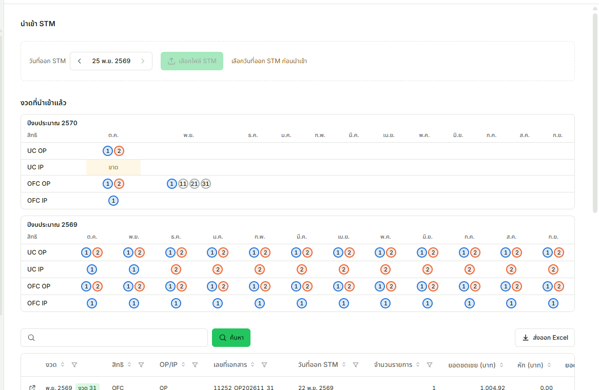
รูป 2 หน้านำเข้า STM (1) ช่องวันที่ออก STM (2) ปุ่มเลือกไฟล์ STM ซึ่งยังกดไม่ได้จนกว่าจะเลือกวันที่ (3) ตาราง "งวดที่นำเข้าแล้ว" ต่อปีงบ วงกลมตัวเลขคือครั้งที่ของงวดในเดือนนั้น ช่องสีเหลือง "ขาด" คือเดือนที่ผ่านไปแล้วแต่ยังไม่มีไฟล์ (4) ตารางไฟล์ที่นำเข้า กดไอคอนหน้าแถวเพื่อดูรายละเอียด
นำเข้า REP
เปิด ผลการเคลม › นำเข้า REP กด เลือกไฟล์ REP หรือลากไฟล์มาวาง ไม่ต้องเลือกวันที่ REP ใช้ดูสถานะเคลมและรหัสติด C เท่านั้น ไม่ได้ใช้ตัดหนี้ แต่ช่วยให้หน้าตัดลูกหนี้จับคู่ราย STM กับ VN/AN ได้ครบขึ้น และบอกรายที่ REP ผ่านแต่ STM ยังไม่จ่าย
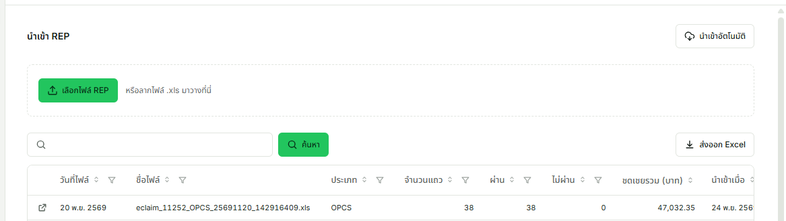
รูป 3 หน้านำเข้า REP ปุ่ม นำเข้าอัตโนมัติ (มุมขวาบน) ดึงทั้ง REP และ STM จาก e-Claim ให้ในครั้งเดียว
หมายเหตุ: นำเข้าอัตโนมัติ
ปุ่ม นำเข้าอัตโนมัติ ใช้ส่วนขยาย (extension) ของ Chrome ที่ต้องติดตั้งครั้งแรกตามคำแนะนำในหน้าต่างที่เปิดขึ้น ทุกครั้งที่ใช้ต้องเปิดแท็บ e-Claim ที่ login ด้วย ThaiD ไว้ใน Chrome เดียวกัน เลือกช่วงเดือน กด ตรวจรายการ แล้วกด นำเข้า ระบบข้ามไฟล์ที่นำเข้าแล้ว STM ที่ดึงอัตโนมัติมีเฉพาะสิทธิ UC และ OFC STM ของ OFC ใช้วันที่ "ออกรายงานวันที่" ในไฟล์เป็นวันที่ออก STM
ตรวจหลังทำ
- ทุกไฟล์ขึ้น "นำเข้าแล้ว" หรือ "ซ้ำ" ไม่มี "ไม่สำเร็จ"
- ในตาราง "งวดที่นำเข้าแล้ว" ไม่มีช่อง "ขาด" ของเดือนที่ควรได้ไฟล์แล้ว
- ยอดโอนสุทธิของไฟล์ตรงกับเอกสาร Statement
ข้อความที่อาจเจอ
| ข้อความ | ความหมายและวิธีแก้ |
|---|
เลขที่เอกสารนี้นำเข้าไว้แล้ว (ซ้ำ) | ไฟล์นี้มีในระบบแล้ว ไม่ต้องทำอะไร |
ไม่ใช่ไฟล์ .xls (ไม่รองรับ) | เลือกไฟล์ผิดชนิด ใช้ไฟล์ STM ต้นฉบับ .xls |
ไฟล์ใหญ่เกิน 30 MB | ไฟล์ใหญ่ผิดปกติ ตรวจว่าเป็นไฟล์ STM จริง |
วันที่ออก STM ไม่ถูกต้อง | เลือกวันที่ออก STM ใหม่ (ห้ามเป็นวันในอนาคต) |
บันทึกลงฐานข้อมูลไม่สำเร็จ | ลองนำเข้าไฟล์นั้นอีกครั้ง ถ้ายังไม่ได้ แจ้งทีมพัฒนา |
ไฟล์นี้ใช้ตัดหนี้แล้ว ลบไม่ได้ | ผู้ดูแลระบบกดลบไฟล์ที่เคยใช้ตัดหนี้ไปแล้ว ลบไม่ได้ ถ้าตัดผิดให้แก้ด้วยคำขอปรับปรุงลูกหนี้ |
ห้ามทำ
- ห้ามนำเข้าโดยไม่เปลี่ยนวันที่ออก STM ให้ตรงกับเอกสาร วันที่นี้ใช้เป็นวันที่ของ STM ในรายงานทุกหน้า
- ผู้ดูแลระบบ: ปุ่ม ลบ ท้ายแถวต้องกด ยืนยันลบ อีกครั้ง ลบแล้วกู้คืนไม่ได้ (นำเข้าใหม่ได้) ลบเฉพาะไฟล์ที่นำเข้าผิดเท่านั้น
การลงบัญชี: การนำเข้า STM และ REP ไม่ลงบัญชี ลงบัญชีเมื่อกดตัดลูกหนี้ในขั้น ค
ขดึงเงินโอนจาก SMT (เงินโอนที่ได้รับ)
- เมื่อไร
- อย่างน้อยเดือนละครั้งหลังมีเงินโอนเข้า และ ทุกครั้งก่อนตัดหนี้เหมาจ่าย (ขั้น ง)
- ใครทำ
- ผู้ใช้ทั่วไป ส่วนการจับคู่กองทุนกับบัญชีเป็นของผู้ดูแลระบบ
- ต้องทำก่อน
- ไม่มี ระบบดึงจากรายงานเงินโอนของ SMT สปสช. โดยตรง ไม่ต้องดาวน์โหลดไฟล์
ขั้นตอน
- เปิด รับเงิน › เงินโอนที่ได้รับ
- เลือก ปีงบ (วันที่โอน) ที่มุมขวาบน
- กด ดึงจาก SMT รอจนข้อความสรุปขึ้น เช่น
ดึงจาก SMT ปีงบ 2570 … รายการ · เพิ่มใหม่ … · อัปเดตตาม SMT … · เหมือนเดิม …
- ตรวจตาราง ยอดรับต่อบัญชี ว่ายอดรายเดือนของ
4301020105.214 (เหมาจ่ายรายหัว UC OP) และ 4301020105.217 (P&P) ตรงกับเงินที่เข้าธนาคาร
- ถ้าหัวข้อ กองทุนใน SMT แสดง "ยังไม่จับคู่ … กองทุน" ให้แจ้งผู้ดูแลระบบจับคู่บัญชี (ดูภาคผนวก) แล้วกด ดึงจาก SMT อีกครั้ง
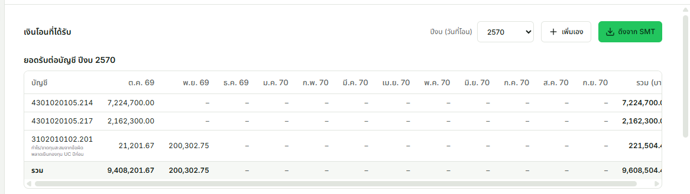
รูป 4 (1) ปีงบ (2) ปุ่ม เพิ่มเอง (3) ปุ่ม ดึงจาก SMT (4) ตารางยอดรับต่อบัญชีต่อเดือน แถว 3102010102.201 คือเงินโอนของงบปีก่อนที่ระบบแยกให้อัตโนมัติ
- กดดึงซ้ำได้ ไม่เกิดรายการซ้ำ รายการที่การเงินแก้หรือยกเลิกไว้แล้วจะไม่ถูกทับ (นับเป็น "แก้/ยกเลิกแล้ว ไม่ทับ")
- รายการที่ SMT ยังเป็น "รอโอน" ไม่ถูกนำเข้า และรายการยอด 0 ถูกข้าม
- รายการที่เป็นงบของปีงบก่อนวันโอน (เช่น OP REFER หรือ P&P งวดปีก่อน) ระบบลงบัญชี
3102010102.201 กำไร/ขาดทุนสะสมจากข้อผิดพลาดเงินกองทุน UC ปีก่อน แทนบัญชีรายได้ เพื่อไม่ให้นับเป็นรายได้เหมาจ่ายของปีนี้
เพิ่มรายการเอง แก้ และยกเลิก
- เงินโอนที่ไม่มีใน SMT: กด เพิ่มเอง กรอก วันที่โอน เลขที่เอกสาร บัญชี (เครดิต) จำนวนเงิน (บาท) ถูกหักคืนใส่ลบ หมายเหตุ แล้วกด เพิ่มรายการ
- แก้รายการ: ในตาราง "รายการโอน" กดไอคอนหน้าแถว ส่วน "แก้รายการ" แก้แล้วกด บันทึกการแก้ไข รายการที่แก้จะมีป้าย "แก้แล้ว" (ชี้ที่ป้ายเพื่อดูยอดเดิมจาก SMT)
- ยกเลิกรายการ: ส่วน "ยกเลิกรายการ" กรอก เหตุผลที่ยกเลิก แล้วกด ยกเลิกรายการ
ตรวจหลังทำ
- ข้อความสรุปไม่มี "กองทุนยังไม่จับคู่" ถ้ามี รายการของกองทุนนั้นยังไม่ถูกนำเข้า ยอดจะขาด
- ยอดรับต่อบัญชีของเดือนตรงกับ Statement ธนาคาร
ข้อความที่อาจเจอ
| ข้อความ | ความหมายและวิธีแก้ |
|---|
ดึงข้อมูล SMT ไม่สำเร็จ: หมดเวลารอ | เว็บ SMT ตอบช้าหรือล่ม รอสักครู่แล้วกดใหม่ |
กองทุนยังไม่จับคู่ … ในสรุป และรายชื่อกองทุนพร้อมยอด | ผู้ดูแลระบบต้องจับคู่บัญชีของกองทุนนั้นก่อน แล้วกดดึงใหม่ |
อยู่ในงวดที่ปิดแล้ว … ในสรุป | รายการที่วันที่โอนอยู่ในงวดที่ปิดแล้วไม่ถูกเพิ่มหรือแก้ ต้องให้ผู้ดูแลเปิดงวดก่อน หรือเพิ่มเองในงวดที่เปิด |
งวดถึงเดือน … ปิดแล้ว แก้หรือเพิ่มรายการในงวดที่ปิดไม่ได้ | เลือกวันที่โอนในงวดที่ยังเปิด |
งวดของวันที่โอนนี้ปิดแล้ว แก้หรือยกเลิกไม่ได้ | รายการอยู่ในงวดที่ปิดแล้ว ต้องให้ผู้ดูแลเปิดงวด |
รหัสบัญชีต้องเป็นรูปแบบ 4301020105.214 … | เลือกบัญชีจากรายการ หรือพิมพ์ให้ครบ 10 หลัก จุด และเลขท้าย |
จำนวนเงินต้องไม่เป็น 0 และมีทศนิยมไม่เกิน 2 ตำแหน่ง | แก้จำนวนเงิน |
วันที่โอนต้องอยู่ระหว่างวันเริ่มสมุดลูกหนี้ถึงวันนี้ | สมุดลูกหนี้เริ่ม 1 ต.ค. 2568 เลือกวันที่ไม่เกินวันนี้ |
ห้ามทำ
- ห้ามเพิ่มเองซ้ำกับรายการที่ SMT มีอยู่แล้ว ยอดจะนับสองครั้ง
- ห้ามยกเลิกรายการ SMT เพื่อ "ลบ" เงินที่ถูกหักคืน ให้เพิ่มรายการยอดติดลบแทน
การลงบัญชี: รับเงินโอน Dr เงินฝากธนาคาร / Cr บัญชีของรายการ (เช่น 4301020105.214) ยอดติดลบ (ถูกหักคืน) กลับข้าง เงินในบัญชี .214 และ .217 เป็นวงเงินที่ขั้น ง ใช้ตัดหนี้เหมาจ่าย
คตัดลูกหนี้ด้วย STM
- เมื่อไร
- หลังนำเข้า STM แต่ละไฟล์ ทำทีละไฟล์
- ใครทำ
- ผู้ใช้ทั่วไป
- ต้องทำก่อน
- นำเข้า STM (ขั้น ก) และมีเลขที่ใบเสร็จรับเงินของยอดนั้นแล้ว ควรนำเข้า REP งวดเดียวกันด้วย
ระบบตัดเฉพาะบัญชีที่ตั้งค่า "ตัดหนี้ด้วย STM" ไว้ ปัจจุบันคือ 1102050101.202 UC IP, .216 UC OP บริการเฉพาะ (CR), .217 UC IP บริการเฉพาะ, .222 OP Refer, .401 เบิกจ่ายตรงกรมบัญชีกลาง OP และ .402 กรมบัญชีกลาง IP บัญชีอื่นตัดด้วยวิธีอื่น (ขั้น ง จ ฉ)
ขั้นตอน
- เปิด ลูกหนี้ › ตัดลูกหนี้ ตารางแสดงไฟล์ STM ทุกไฟล์ คอลัมน์ ตัดแล้ว (รายการ) บอกว่าตัดไปแล้วกี่รายการจากที่ STM จ่าย
- กดไอคอนหน้าแถวของไฟล์ที่จะตัด หน้าต่าง "ตัดลูกหนี้ <เลขที่เอกสาร>" เปิดขึ้น แสดงหนึ่งแถวต่อหนี้หนึ่งราย
- ดูปุ่มสรุปด้านบน กดปุ่มเพื่อกรองตาราง: ตรงยอด มีส่วนต่าง ไม่พบหนี้ที่ตัดได้ REP งวดนี้ STM ไม่จ่าย ตัดแล้ว
- ในกลุ่ม "มีส่วนต่าง" เลือกว่าจะปิดส่วนต่างรายใดในคอลัมน์ ปิดส่วนต่าง
- ได้รับต่ำกว่า ค่าเริ่มต้นไม่ติ๊ก ระบบรับชำระตามที่ STM จ่าย คงเหลือเก็บไว้รอ STM งวดถัดไป (สถานะเป็น "รับบางส่วน") ติ๊กเมื่อแน่ใจว่าจะไม่ได้รับเพิ่ม
- ได้รับสูงกว่า ค่าเริ่มต้นติ๊ก ระบบปิดยอดที่รับเกินเป็นส่วนต่าง
- ด้านล่างหน้าต่าง เลือก วันที่ออกใบเสร็จ และกรอก เลขที่ใบเสร็จ (บังคับเมื่อมีรายการรับชำระ) ข้อความถัดไปบอกยอดที่จะลง เช่น
รับชำระ 449 ราย 823,590.37 บาท · ปิดส่วนต่าง 0 ราย 0.00 บาท
- กด ตัดลูกหนี้ ระบบยังไม่บันทึก แต่แสดงข้อความยืนยันสีส้ม ตรวจวันที่ เลขที่ใบเสร็จ และยอด
- กด ยืนยันตัดลูกหนี้ เพื่อบันทึก หรือ แก้ไข เพื่อกลับไปแก้ ผลจะขึ้นเป็น
ชุด #… : รับชำระ … รายการ … บาท · ปิดส่วนต่าง … รายการ … บาท
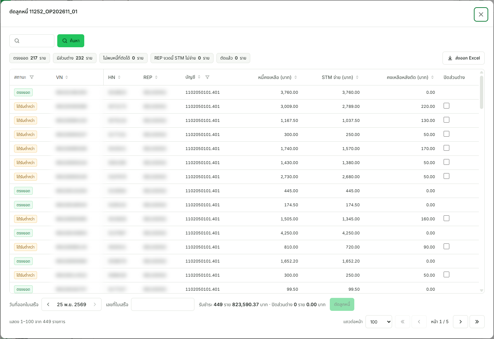
รูป 5 หน้าต่างตัดลูกหนี้ (1) ปุ่มสรุปกลุ่ม กดเพื่อกรอง (2) สถานะรายหนี้ (3) คอลัมน์หนี้คงเหลือ STM จ่าย และคงเหลือหลังตัด (4) ช่องติ๊กปิดส่วนต่าง (5) แถบล่าง: วันที่ออกใบเสร็จ เลขที่ใบเสร็จ ยอดที่จะลง และปุ่มตัดลูกหนี้ ช่อง VN HN และเลข REP ถูกเบลอ
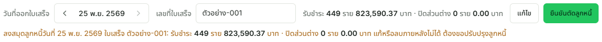
รูป 6 หลังกด "ตัดลูกหนี้" ระบบแสดงข้อความยืนยันพร้อมปุ่ม แก้ไข และ ยืนยันตัดลูกหนี้ (เลขที่ใบเสร็จในรูปเป็นตัวอย่าง)
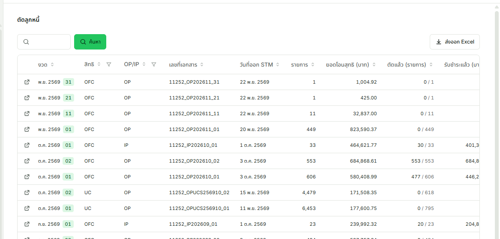
รูป 7 ตารางไฟล์ STM ในหน้าตัดลูกหนี้ คอลัมน์ "ตัดแล้ว (รายการ)" เช่น 477 / 606 หมายถึงตัดแล้ว 477 จาก 606 รายการที่ STM จ่าย
ความหมายของสถานะรายหนี้
| สถานะ | ความหมาย | ต้องทำอะไร |
|---|
| ตรงยอด | STM จ่ายเท่าหนี้คงเหลือ | ตัดได้เลย |
| ได้รับต่ำกว่า | STM จ่ายน้อยกว่าหนี้ | เลือกว่าจะปิดส่วนต่างหรือรอ STM งวดถัดไป |
| ได้รับสูงกว่า | STM จ่ายมากกว่าหนี้ | ปกติปิดส่วนต่าง (ติ๊กไว้ให้แล้ว) |
| ถูกเรียกคืน | STM งวดนี้หักเงินคืน | ตรวจกับ Statement ก่อนตัด |
| ยังไม่ลงสมุด | หนี้ของ VN/AN นี้ยังไม่ถูกตั้ง (เช่น การเงินยังไม่ล็อกรายการผู้ป่วยใน หรือยังไม่ออกใบลูกหนี้) | ให้ตั้งหนี้ใน HOSxP แล้วรอรอบกลางคืน (หรือกด "ดึงยอดล่าสุด") แล้วเปิดไฟล์นี้ตัดอีกครั้ง |
| ไม่พบ VN/AN | จับคู่บรรทัด STM กับ VN/AN ไม่ได้ | นำเข้า REP งวดที่ตรงกันแล้วเปิดดูใหม่ |
| บัญชีไม่ตัดด้วย STM | หนี้อยู่ในบัญชีที่ไม่ได้ตั้งให้ตัดด้วย STM | ตรวจว่าบัญชีถูกต้องไหม ถ้าบัญชีผิดแจ้งผู้ดูแลระบบ |
| ยังไม่ระบุบัญชี | หนี้ยังไม่มีรหัสบัญชี | แจ้งผู้ดูแลระบบกำหนดกติกาบัญชี |
| STM จ่าย 0 | บรรทัด STM ยอด 0 | ไม่มีอะไรให้ตัด |
| STM ไม่จ่าย | REP งวดนี้ผ่าน แต่ไม่มีใน STM | ติดตามกับ สปสช. หรือรอ STM งวดถัดไป |
| ตัดครบ รับบางส่วน | ตัดไปแล้วจนคงเหลือ 0 / ตัดแล้วยังเหลือ | รายที่รับบางส่วนปิดส่วนต่างภายหลังได้ โดยติ๊กในแถวที่ตัดแล้วและกดตัดอีกครั้ง |
ตรวจหลังทำ
- ข้อความผลขึ้นเลขชุด และยอดรับชำระรวมตรงกับยอดโอนสุทธิของ STM (ยกเว้นรายที่ยังไม่ลงสมุดหรือไม่พบ VN/AN)
- เปิดหัวข้อ "ประวัติการตัด … ชุด" ใต้แถบล่าง เห็นชุดที่เพิ่งตัด พร้อมวันที่และเลขที่ใบเสร็จ
- กลุ่ม "ไม่พบหนี้ที่ตัดได้" ที่เหลือ มีเหตุผลอธิบายได้ทุกราย
ข้อความที่อาจเจอ
| ข้อความ | ความหมายและวิธีแก้ |
|---|
ปุ่ม ตัดลูกหนี้ กดไม่ได้ ชี้แล้วขึ้น กรอกเลขที่ใบเสร็จ | กรอกเลขที่ใบเสร็จก่อน |
วันที่ใบเสร็จอยู่ในงวดที่ปิดแล้ว รายการจะลงวันที่ … | งวดของวันที่เลือกปิดแล้ว ระบบจะลงวันแรกของงวดที่เปิด ตรวจว่ายอมรับได้ |
ไม่มีรายการที่ตัดหรือปิดส่วนต่างได้ (ตัดไปแล้ว หรือยังไม่พบหนี้) | ไฟล์นี้ตัดครบแล้ว หรือหนี้ยังไม่ลงสมุด |
รายการถูกตัดไปแล้ว | มีคนอื่นตัดไฟล์เดียวกันพร้อมกัน ปิดหน้าต่างแล้วเปิดใหม่ |
วันที่ออกใบเสร็จต้องอยู่ระหว่างวันเริ่มสมุดลูกหนี้ถึงวันนี้ | เลือกวันที่ตั้งแต่ 1 ต.ค. 2568 ถึงวันนี้ |
เลขที่ใบเสร็จยาวได้ไม่เกิน … ตัวอักษร | ย่อเลขที่ใบเสร็จ |
ห้ามทำ
- ห้ามกดยืนยันก่อนตรวจเลขที่ใบเสร็จและวันที่ ชุดที่ตัดแล้ว ยกเลิกไม่ได้ แก้ได้ทางเดียวคือคำขอปรับปรุงลูกหนี้ทีละราย
- ห้ามติ๊กปิดส่วนต่างของรายที่ได้รับต่ำกว่า ถ้ายังมีโอกาสได้รับเพิ่มจาก STM อุทธรณ์หรืองวดถัดไป
การลงบัญชี
| รายการ | เดบิต | เครดิต |
|---|
| รับชำระตาม STM | เงินฝากธนาคาร | ลูกหนี้ (บัญชีของหนี้) |
| ปิดส่วนต่าง กรณีได้รับต่ำกว่า | ส่วนต่างค่ารักษาที่สูงกว่าข้อตกลง ของบัญชีนั้น | ลูกหนี้ |
| ปิดส่วนต่าง กรณีได้รับสูงกว่า | ลูกหนี้ | ส่วนต่างค่ารักษาที่ต่ำกว่าข้อตกลง ของบัญชีนั้น |
บัญชีส่วนต่างของแต่ละบัญชีลูกหนี้ดูได้ที่ตาราง STM ในหัวข้อ 3
งตัดหนี้เหมาจ่ายสิ้นเดือน .201 / .209
- เมื่อไร
- หลังจบเดือน ทำเดือนละครั้ง เรียงจากเดือนเก่าไปใหม่
- ใครทำ
- ผู้ใช้ทั่วไป
- ต้องทำก่อน
- กดดึงจาก SMT (ขั้น ข) ให้ได้เงินโอนของเดือนนั้นครบก่อน และเดือนก่อนหน้าตัดไปแล้ว
หนี้ UC ผู้ป่วยนอกใน CUP (1102050101.201) และหนี้ P&P (1102050101.209) ไม่ได้รับเป็นรายราย แต่ได้เป็นเงินเหมาจ่าย ระบบจึงตัดหนี้ด้วยเงินโอนสะสมของปีงบที่อยู่ในบัญชีรายได้ 4301020105.214 และ 4301020105.217
- วงเงินที่ใช้ตัดได้ = เงินโอนเข้าบัญชีรายได้นั้นตั้งแต่ต้นปีงบถึงสิ้นเดือน − ที่ใช้ตัดไปแล้วในปีงบ
- ระบบเรียงหนี้ที่ยังคงเหลือตามวันที่ตั้งหนี้ (ตั้งแต่ต้นปีงบถึงสิ้นเดือน) ตัดไปจนวงเงินหมด ส่วนที่วงเงินไม่พอลงส่วนต่างทันที หนี้ทุกรายในรอบจึงเหลือ 0
- รายการลงวันที่สิ้นเดือนที่เลือก
ขั้นตอน
- เปิด ลูกหนี้ › ตัดหนี้เหมาจ่าย
- เลือก สิ้นเดือน (ค่าเริ่มต้นคือเดือนก่อน)
- อ่านกรอบของแต่ละบัญชี: รับโอนในปีงบถึง … ตัดหนี้ไปแล้วในปีงบ ใช้ตัดได้ หนี้คงเหลือ … ราย ตัดด้วยเหมาจ่าย ลงส่วนต่าง (ตัวแดงเมื่อมากกว่า 0) และ เหมาจ่ายคงเหลือหลังตัด
- กด ดูรายหนี้ … ราย เพื่อดูรายหนี้ที่จะตัด (ข้อมูลผู้ป่วย ห้ามส่งต่อ)
- กด ตัดหนี้สิ้นเดือน <เดือน> ระบบแสดง
ยืนยันตัดหนี้ … สิ้นเดือน …: ตัดด้วยเหมาจ่าย … บาท และลงส่วนต่าง … บาท
- กด ยืนยันตัดหนี้ หรือ ยังไม่ตัด ทำแยกทีละบัญชี (.201 และ .209)
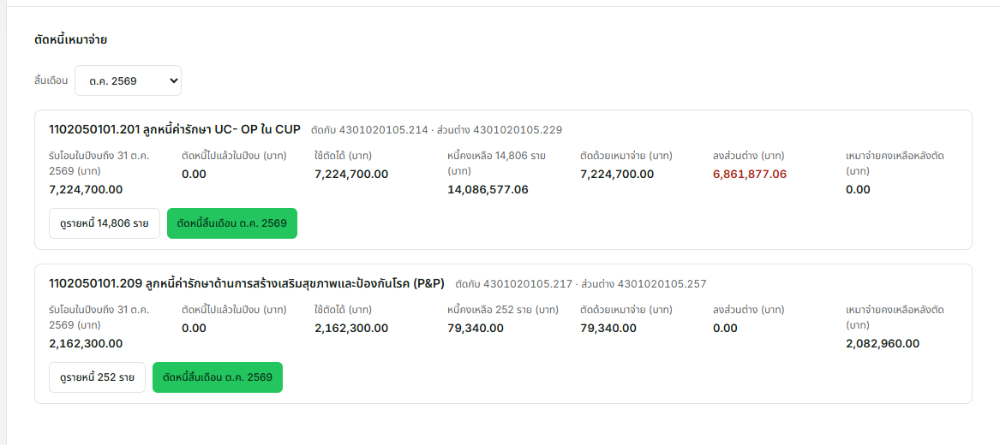
รูป 8 ตัดหนี้เหมาจ่ายสิ้นเดือน ต.ค. 2569 (1) เลือกสิ้นเดือน (2) บรรทัดหัวกรอบบอกบัญชีที่ใช้ตัด (.214) และบัญชีส่วนต่าง (.229) (3) ยอดลงส่วนต่างตัวแดง: เงินโอนเหมาจ่ายไม่พอกับหนี้ (4) ปุ่มดูรายหนี้และปุ่มตัดหนี้สิ้นเดือน ในตัวอย่าง .209 ยังเหลือวงเงิน 2,082,960.00 บาทไว้ใช้เดือนถัดไปในปีงบเดียวกัน
ตรวจหลังทำ
- ข้อความผล
ชุด #… …: ตัดด้วยเหมาจ่าย … ราย … บาท · ลงส่วนต่าง … ราย … บาท
- ชุดใหม่ขึ้นในตาราง "ชุดที่ตัดแล้ว" ด้านล่าง
- ในหน้า ลูกหนี้ตามผังบัญชี บัญชี .201/.209 ของเดือนนั้นมียอด "ลดหนี้" เท่ายอดตัดรวมส่วนต่าง
ข้อความที่อาจเจอ (แทนปุ่มตัดหนี้)
| ข้อความ | ความหมายและวิธีแก้ |
|---|
เดือนนี้ยังไม่จบ แสดงตัวอย่างถึงวันนี้ ยืนยันได้เมื่อจบเดือน / ยืนยันได้เมื่อจบเดือนแล้ว | ดูตัวอย่างได้ ตัดจริงได้หลังจบเดือน |
งวดถึงเดือน … ปิดแล้ว ตัดหนี้ของเดือนที่ปิดไม่ได้ | เดือนนั้นปิดงวดแล้ว ต้องตัดก่อนปิดงวด ถ้าลืมให้ผู้ดูแลเปิดงวด |
ยังไม่กำหนดบัญชีส่วนต่างของ … | ผู้ดูแลระบบยังไม่ตั้งบัญชีส่วนต่าง แจ้งทีมพัฒนา (หน้าจอยังไม่มีช่องแก้ค่านี้) |
ไม่มีหนี้คงเหลือที่ต้องตัด | ตัดครบแล้ว |
รายการถูกตัดไปแล้ว กดดูตัวอย่างใหม่ | มีคนตัดพร้อมกัน โหลดหน้าใหม่ |
ยังไม่มีบัญชีลูกหนี้ที่กำหนดบัญชีตัดเหมาจ่าย | ผู้ดูแลระบบยังไม่ตั้ง "ตัดอัตโนมัติ (Dr)" ของบัญชี |
ห้ามทำ
- ห้ามตัดก่อนดึงเงินโอนของเดือนนั้นจาก SMT ส่วนที่วงเงินไม่พอจะลงส่วนต่าง .229/.257 ทันทีและหนี้กลายเป็น 0 เงินที่ดึงมาทีหลังจะใช้ได้กับหนี้ของเดือนถัดไปเท่านั้น
- ห้ามตัดข้ามเดือน ต้องตัดเดือนเก่าก่อน เพราะรอบของเดือนหลังรวมหนี้ตั้งแต่ต้นปีงบที่ยังคงเหลือ ถ้าตัดเดือนหลังก่อน หนี้ของเดือนก่อนจะถูกตัดในวันสิ้นเดือนหลังแทน
การลงบัญชี
| รายการ | เดบิต | เครดิต |
|---|
| ตัดด้วยเหมาจ่าย .201 | 4301020105.214 รายได้เหมาจ่าย | 1102050101.201 |
| ส่วนต่างเมื่อเหมาจ่ายไม่พอ .201 | 4301020105.229 | 1102050101.201 |
| ตัดด้วยเหมาจ่าย .209 | 4301020105.217 | 1102050101.209 |
| ส่วนต่างเมื่อเหมาจ่ายไม่พอ .209 | 4301020105.257 | 1102050101.209 |
จตัดหนี้บัตรประกันสุขภาพต่างด้าวสิ้นเดือน
- เมื่อไร
- หลังจบเดือน เรียงจากเดือนเก่าไปใหม่
- ใครทำ
- ผู้ใช้ทั่วไป ส่วนการกำหนดยอดเงินของชนิดบัตรเป็นของผู้ดูแลระบบ
- ต้องทำก่อน
- ทะเบียนบัตรของเดือนนั้นครบ (ระบบดึงรายการขายบัตรจาก HOSxP เองเมื่อเปิดหน้า) และชนิดบัตรทุกชนิดกำหนดยอดเงินรับล่วงหน้าแล้ว
ค่าบริการทางการแพทย์ของบัตรที่ขายเข้าเป็นเงินรับล่วงหน้า 2103010103.502 ก้อนเดียว ใช้ตัดหนี้ผู้ถือบัตรสิทธิ 99 ในบัญชี 1102050101.501 (OP) และ .502 (IP)
ขั้นตอน
- เปิด ลูกหนี้ › บัตรประกันสุขภาพต่างด้าว แล้วกดแท็บ ตัดหนี้สิ้นเดือน
- เลือก สิ้นเดือน
- ตรวจยอด เงินรับล่วงหน้า ณ … ตัดด้วยเงินรับล่วงหน้า ลงส่วนต่าง คงเหลือหลังตัด และป้าย ต้องตรวจ … ราย ไม่ตัด บัตรชนิดที่ยังไม่กำหนดยอด … ใบ
- ตรวจตาราง "แผนตัดหนี้" คอลัมน์ ผล: ตัดเต็มยอด / ตัดบางส่วน + ส่วนต่าง / pool หมด ลงส่วนต่าง / ต้องตรวจ / ชนิดบัตรยังไม่กำหนดยอด และหัวข้อ "ต้องตรวจ" ด้านล่าง แก้รายที่ต้องตรวจใน HOSxP ก่อน
- กด ตัดหนี้สิ้นเดือน <เดือน> แล้ว ยืนยันตัดหนี้ (หรือ ยังไม่ตัด) ปุ่มนี้ไม่แสดงถ้ามีบัตรชนิดที่ยังไม่กำหนดยอด
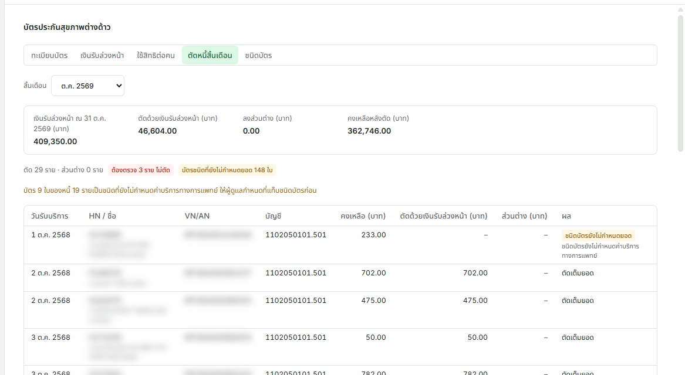
รูป 9 แท็บตัดหนี้สิ้นเดือน (1) แท็บ (2) ยอดเงินรับล่วงหน้าและยอดที่จะตัด (3) ป้ายต้องตรวจและบัตรที่ยังไม่กำหนดยอด (4) ข้อความสีส้มบอกว่าทำไมยังยืนยันไม่ได้ ในตัวอย่างมีบัตร 9 ใบเป็นชนิดที่ยังไม่กำหนดยอด ปุ่มตัดหนี้จึงไม่แสดง (5) แผนตัดหนี้รายราย ช่อง HN ชื่อ และ VN ถูกเบลอ
เหตุที่รายหนี้ "ต้องตรวจ" (ระบบไม่ตัดให้)
ไม่พบ HN หรือวันรับบริการใน HOSxP
สิทธิของ visit ใน HOSxP เป็น … ไม่ใช่ 99 แล้ว แก้สิทธิหรือบัญชีลูกหนี้
ไม่มีบัตรที่ใช้ได้ในวันรับบริการ ตรวจสิทธิใน HOSxP
(ผู้ป่วยในใช้วัน admit หาบัตร)
หมายเหตุ: งานอื่นในหน้าบัตรต่างด้าว
- แท็บ ทะเบียนบัตร: ปุ่ม ดึงใหม่ ดึงรายการขายบัตรของเดือนที่เลือกจาก HOSxP กดซ้ำได้ ไม่ลงซ้ำ ป้าย "ไม่มีใบเสร็จ" "paidst 02" "ไม่พบใน HOSxP" คือบัตรที่ควรตรวจ แก้วันใช้ได้หรือยกเลิกบัตร (ต้องมีเหตุผล) ได้ในรายละเอียดบัตร
- แท็บ เงินรับล่วงหน้า: บัตรหมดอายุที่ยังมีเงินคงเหลือ กด บันทึกโอน เพื่อโอนคงเหลือไปเงินบำรุง
- แท็บ ใช้สิทธิต่อคน: ยอดใช้ต่อผู้ถือบัตร และยอดที่ใช้เกิน
ตรวจหลังทำ
- ข้อความผล
ชุด #…: ตัดด้วยเงินรับล่วงหน้า … ราย … บาท · ส่วนต่าง … ราย … บาท · ต้องตรวจ … ราย
- ชุดใหม่ขึ้นในตาราง "ชุดที่ตัดแล้ว"
- รายที่ต้องตรวจถูกแก้ใน HOSxP แล้ว และกลับมาตัดในเดือนเดียวกันอีกครั้งได้
ข้อความที่อาจเจอ
| ข้อความ | ความหมายและวิธีแก้ |
|---|
บัตร … ใบของหนี้ … รายเป็นชนิดที่ยังไม่กำหนดค่าบริการทางการแพทย์ ให้ผู้ดูแลกำหนดที่แท็บชนิดบัตรก่อน | แจ้งผู้ดูแลระบบกำหนดยอด "เงินรับล่วงหน้าต่อใบ" ที่แท็บชนิดบัตร |
ไม่มีหนี้ที่ตัดได้ในเดือนนี้ (ตัดไปแล้ว หรือทุกรายต้องตรวจ) | ตัดครบแล้ว หรือต้องแก้รายที่ต้องตรวจก่อน |
ยืนยันได้เมื่อจบเดือนแล้ว | รอจบเดือน |
รายการถูกตัดไปแล้ว กดดูตัวอย่างใหม่ | มีคนตัดพร้อมกัน โหลดหน้าใหม่ |
ดึงรายการขายบัตรจาก HOSxP ไม่สำเร็จ: … · กดดึงใหม่อีกครั้งได้ รายการที่มีแล้วไม่ลงซ้ำ | กด ดึงใหม่ ในแท็บทะเบียนบัตร |
ห้ามทำ
- ห้ามตัดก่อนทะเบียนบัตรของเดือนนั้นครบ หนี้ที่หาบัตรไม่เจอจะเป็น "ต้องตรวจ" และวงเงินจะผิด
- ห้ามยกเลิกบัตรโดยไม่ตรวจกับ HOSxP ว่าไม่ได้ขายจริง
การลงบัญชี
| รายการ | เดบิต | เครดิต |
|---|
| ตัดด้วยเงินรับล่วงหน้า | 2103010103.502 รายได้ค่ารักษาแรงงานต่างด้าวรับล่วงหน้า | 1102050101.501 / .502 |
| ส่วนต่างเมื่อเงินรับล่วงหน้าไม่พอ | ส่วนต่างที่สูงกว่าข้อตกลงของบัญชี (ตั้งค่าปัจจุบัน .501 → 4301020106.505, .502 → 4301020106.507) | 1102050101.501 / .502 |
บัญชี 2103010103.502 เป็นบัญชีงบดุล ยอดยกไปข้ามปีงบ ไม่ปิดทุก 1 ต.ค.
ฉบันทึกรับเงินที่ไม่ได้มาจาก STM
- เมื่อไร
- เมื่อได้รับเงินของหนี้ที่ไม่ตัดด้วย STM เช่น ประกันสังคม อปท. พรบ.รถ ชำระเงินเอง เบิกต้นสังกัด ตรวจสุขภาพ
- ใครทำ
- ผู้ใช้ทั่วไป
- ต้องทำก่อน
- หนี้รายนั้นลงสมุดแล้ว และมีเลขที่ใบเสร็จ
ขั้นตอน
- เปิด ลูกหนี้ › ลูกหนี้ตามผังบัญชี
- เลือก งวด ที่ตั้งหนี้รายนั้น (มุมขวาบน)
- ในตารางยอดลูกหนี้ กดรหัสบัญชีของหนี้ ตารางรายการของบัญชีนั้นจะแสดงด้านล่าง
- หารายด้วยช่องค้นหาหรือตัวกรองหัวคอลัมน์ แล้วกดไอคอนหน้าแถวที่เป็น "ตั้งหนี้"
- ในหน้าต่างรายละเอียด ส่วน บันทึกรับเงิน กรอก จำนวนเงิน (บาท) วันที่รับเงิน เลขที่ใบเสร็จ
- ถ้ารับไม่เต็มและจะไม่ได้รับเพิ่ม ติ๊ก ปิดส่วนต่าง ถ้ายังรอรับส่วนที่เหลือ ไม่ต้องติ๊ก
- กด บันทึกรับเงิน ระบบบันทึกทันที ไม่มีขั้นยืนยัน ผลขึ้นเป็น
บันทึกรับเงิน … บาท · ปิดส่วนต่าง … บาท · คงเหลือ … บาท
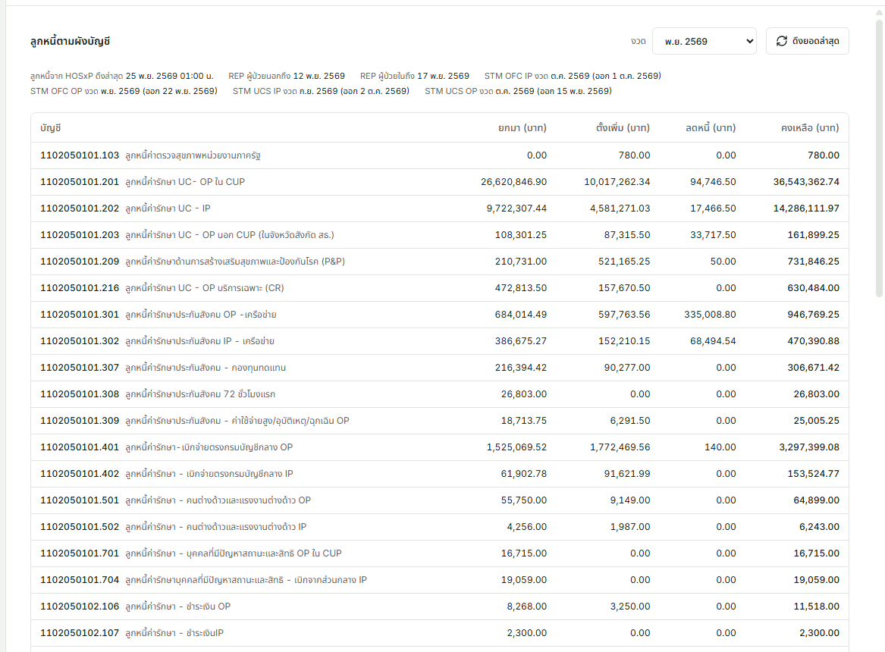
รูป 10 หน้าลูกหนี้ตามผังบัญชี (1) เลือกงวด (2) ปุ่มดึงยอดล่าสุดจาก HOSxP (3) บรรทัดบอกความสดของข้อมูล: ลูกหนี้จาก HOSxP ดึงล่าสุดเมื่อไร REP และ STM ล่าสุดของแต่ละกลุ่ม (4) ตารางยอดลูกหนี้ ยกมา ตั้งเพิ่ม ลดหนี้ คงเหลือ กดรหัสบัญชีเพื่อดูรายการ
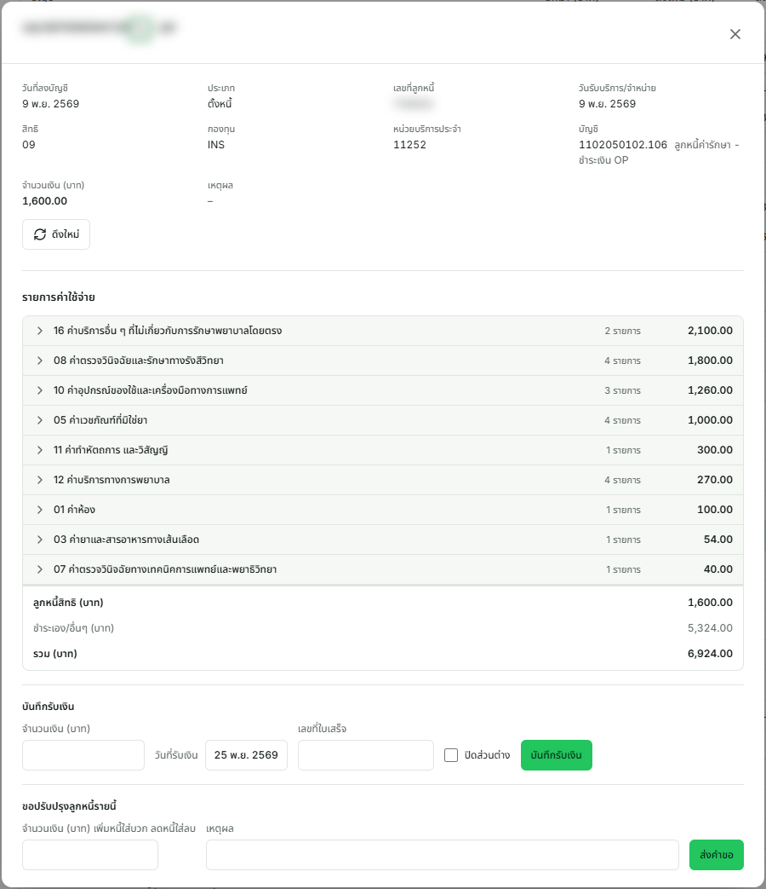
รูป 11 รายละเอียดหนี้หนึ่งราย (บัญชี .106 ชำระเงิน OP) (1) ข้อมูลหนี้และปุ่ม ดึงใหม่ (2) รายการค่าใช้จ่ายของ visit (3) ส่วน บันทึกรับเงิน (แสดงเฉพาะบัญชีที่ไม่ตัดด้วย STM) (4) ส่วน ขอปรับปรุงลูกหนี้รายนี้ หัวหน้าต่างและเลขที่ลูกหนี้ถูกเบลอ
หมายเหตุ
- รับได้ไม่เกินคงเหลือของหนี้ ระบบไม่รองรับการรับเกิน
- บันทึกได้ทีละราย ยังไม่มีหน้าบันทึกรับเงินก้อนเดียวหลายราย (เช่น เงินโอนประกันสังคมทั้งงวด)
- หนี้ประกันสังคมในเครือข่ายตั้งไว้แล้วเพียง 45% (OP) / 55% (IP) ของค่ารักษา ส่วนที่เหลือระบบลงส่วนต่างให้ตอนตั้งหนี้ (ดูกติกา)
- ปุ่ม ดึงใหม่ อ่านยอดของรายนี้จาก HOSxP ทันทีและลงส่วนต่าง ใช้ได้เฉพาะหนี้ที่ยังไม่เคยตัด
ตรวจหลังทำ
- ข้อความผลบอกคงเหลือตามที่คาด
- ตารางยอดลูกหนี้ของงวดที่ลงวันที่รับเงิน คอลัมน์ "ลดหนี้" ของบัญชีนั้นเพิ่มขึ้น (โหลดหน้าใหม่)
ข้อความที่อาจเจอ
| ข้อความ | ความหมายและวิธีแก้ |
|---|
| ไม่มีส่วน "บันทึกรับเงิน" ในหน้าต่าง | บัญชีนี้ตัดด้วย STM ให้ตัดที่หน้า ตัดลูกหนี้ (ขั้น ค) |
บัญชีนี้ตัดด้วย STM ให้ตัดที่หน้าตัดลูกหนี้ | เหมือนข้อบน |
รับได้ไม่เกินคงเหลือ … บาท | ลดจำนวนเงิน ถ้าได้รับเกินจริง ให้ส่งคำขอปรับปรุงลูกหนี้ |
หนี้นี้ไม่มีคงเหลือแล้ว | ตัดครบแล้ว ตรวจว่าบันทึกซ้ำหรือไม่ |
หนี้นี้ยังไม่ระบุบัญชี | แจ้งผู้ดูแลระบบกำหนดบัญชี |
กรอกเลขที่ใบเสร็จ ไม่เกิน … ตัวอักษร | กรอกเลขที่ใบเสร็จ |
จำนวนเงินต้องมากกว่า 0 และมีทศนิยมไม่เกิน 2 ตำแหน่ง | แก้จำนวนเงิน |
วันที่รับเงินต้องอยู่ระหว่างวันเริ่มสมุดลูกหนี้ถึงวันนี้ | เลือกวันที่ไม่เกินวันนี้ |
… · งวดของวันที่นี้ปิดแล้ว ลงวันแรกของงวดที่เปิด | บันทึกแล้ว แต่ลงวันแรกของงวดที่ยังเปิด |
รายนี้ตัดหนี้แล้ว (STM, เงินรับล่วงหน้า, เหมาจ่าย หรือรับเงิน) ดึงใหม่ไม่ได้ ถ้ายอดต้องแก้ให้ขอปรับปรุงลูกหนี้ | ตอบจากปุ่ม "ดึงใหม่" ใช้คำขอปรับปรุงลูกหนี้แทน |
ห้ามทำ
- ห้ามกด บันทึกรับเงิน ซ้ำเมื่อหน้าจอช้า ทุกครั้งที่กดคือการรับเงินหนึ่งครั้ง
- ห้ามใช้บันทึกรับเงินเพื่อ "ลดหนี้" ที่ไม่ได้รับเงินจริง ให้ใช้คำขอปรับปรุงลูกหนี้
การลงบัญชี
| รายการ | เดบิต | เครดิต |
|---|
| รับเงิน | เงินฝากธนาคาร | ลูกหนี้ |
| ปิดส่วนต่างหลังรับเงิน | ส่วนต่างค่ารักษาที่สูงกว่าข้อตกลง ของบัญชีนั้น | ลูกหนี้ |
คำขอปรับปรุงลูกหนี้
ใช้แก้ยอดหนี้ที่ผิด รวมถึงแก้การตัดหนี้ที่ผิด เพราะชุดตัดหนี้ทุกแบบยกเลิกไม่ได้
- เปิดรายละเอียดหนี้แบบเดียวกับการบันทึกรับเงิน ส่วน ขอปรับปรุงลูกหนี้รายนี้
- กรอก จำนวนเงิน (บาท) เพิ่มหนี้ใส่บวก ลดหนี้ใส่ลบ และ เหตุผล แล้วกด ส่งคำขอ ขึ้น
ส่งคำขอแล้ว รอผู้ดูแลระบบอนุมัติ
- คำขอแสดงในหัวข้อ คำขอปรับปรุงลูกหนี้ ท้ายหน้า ลูกหนี้ตามผังบัญชี สถานะ รออนุมัติ / อนุมัติแล้ว / ไม่อนุมัติ
- ผู้ดูแลระบบ ที่ไม่ใช่ผู้ขอ กด อนุมัติ หรือ ไม่อนุมัติ (กรอกเหตุผล) หรือติ๊กหลายรายการแล้วกด อนุมัติที่เลือก … รายการ (ครั้งละไม่เกิน 200) อนุมัติแล้วระบบลงสมุดทันที
| ข้อความ | ความหมายและวิธีแก้ |
|---|
อนุมัติคำขอของตัวเองไม่ได้ ต้องให้ผู้ดูแลคนอื่นตัดสิน | ให้ผู้ดูแลระบบอีกคนอนุมัติ |
คงเหลือตอนนี้ … บาท ลดตามคำขอแล้วจะติดลบ ให้ไม่อนุมัติแล้วขอใหม่ตามยอดปัจจุบัน | ยอดหนี้เปลี่ยนหลังส่งคำขอ (เช่น ตัดด้วย STM แล้ว) ไม่อนุมัติ แล้วผู้ขอส่งใหม่ |
คำขอนี้ตัดสินไปแล้ว | มีผู้ดูแลอีกคนตัดสินแล้ว โหลดหน้าใหม่ |
ไม่พบลูกหนี้นี้ในสมุดลูกหนี้แล้ว / ต้องระบุเหตุผล ไม่เกิน 500 ตัวอักษร | ตรวจรายการและกรอกเหตุผล |
การลงบัญชีเมื่ออนุมัติ: เพิ่มหนี้ Dr ลูกหนี้ / Cr รายได้คู่ของบัญชี ลดหนี้กลับข้าง
ใบลูกหนี้ผู้ป่วยนอกที่ค้างหลัง admit (HOSxP ย้ายรายการไป AN แต่ไม่ยกเลิกใบ) ขอปรับปรุงหลายรายพร้อมกันได้จากหน้า ลูกหนี้ › ตรวจค่ารักษาก่อนตั้งหนี้ ติ๊กแถวสถานะ "ใบลูกหนี้ค้างหลัง admit" แล้วส่งคำขอ อนุมัติแล้วสถานะเปลี่ยนเป็น "ปรับปรุงในสมุดแล้ว"
ชตรวจสถานที่เรียกเก็บ
- เมื่อไร
- ทุกเดือน ก่อนส่งหนังสือเรียกเก็บ และก่อนปิดงวด
- ใครทำ
- ผู้ใช้ทั่วไป
- ต้องทำก่อน
- ขั้น ค ถึง ฉ ของเดือนนั้น ยอด "รับแล้ว" จึงจะครบ
ขั้นตอน
- เปิด ลูกหนี้ › สถานที่เรียกเก็บ
- เลือกช่วงวันที่รับบริการ/จำหน่าย ที่มุมขวาบน (เลือกได้ไม่เกิน 31 วัน เช่น ทั้งเดือน)
- อ่านตารางกลุ่มเรียกเก็บ: จำนวนราย เรียกเก็บ (ราย) รับเงิน (ราย) แยก OPD/IPD และยอด ค่ารักษา ลูกหนี้สุทธิ ส่วนต่าง รับแล้ว คงเหลือ
- กดชื่อกลุ่ม ตารางด้านล่างแยกตามโรงพยาบาลเจ้าของบัตรและกองทุน สลับ ผู้ป่วยนอก / ผู้ป่วยใน ได้
- กดชื่อโรงพยาบาลเพื่อดูรายหนี้ (มีข้อมูลผู้ป่วย ใช้ภายในเท่านั้น) และส่งออก Excel ได้
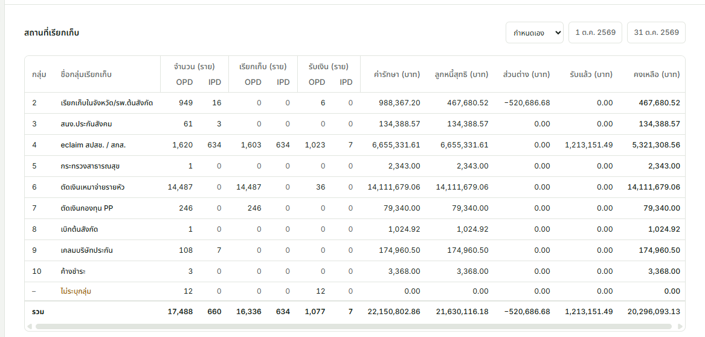
รูป 12 ตารางกลุ่มเรียกเก็บ ต.ค. 2569 (1) ช่วงวันที่ (2) จำนวนราย แยก OPD/IPD (3) เรียกเก็บ (ราย) (4) รับเงิน (ราย) คือรายที่คงเหลือ ≤ 0 (5) แถว "ไม่ระบุกลุ่ม" คือบัญชีที่ผู้ดูแลระบบยังไม่กำหนดกลุ่มเรียกเก็บ
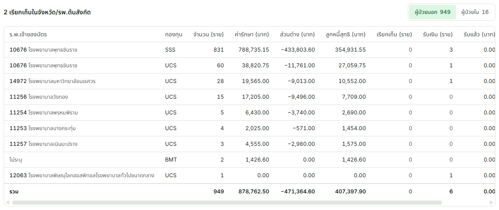
รูป 13 กลุ่ม 2 เรียกเก็บในจังหวัด/รพ.ต้นสังกัด แยกตามโรงพยาบาลเจ้าของบัตรและกองทุน ใช้เป็นรายการที่ต้องส่งหนังสือเรียกเก็บแต่ละแห่ง ส่วนต่างติดลบคือส่วนที่เกินเพดานหรือสัดส่วนที่ตั้งไว้
ความหมายของคอลัมน์ "เรียกเก็บ (ราย)" ตามชนิดกลุ่ม
| ชนิดกลุ่ม | กลุ่ม | นับว่าเรียกเก็บแล้วเมื่อ |
|---|
| ส่งทาง e-Claim | 4 eclaim สปสช. / สกส. | สถานะเคลมตั้งแต่ "ส่งออกแล้ว" ขึ้นไป |
| ตัดอัตโนมัติ | 6 ตัดเงินเหมาจ่ายรายหัว, 7 ตัดเงินกองทุน PP | นับทุกราย (ส่งและตัดตอนตั้งหนี้) |
| ค้างชำระ | 10 ค้างชำระ | ไม่ได้ส่งเรียกเก็บ |
| ส่งหนังสือ | กลุ่มอื่นทั้งหมด | ยังไม่มีบันทึกส่งหนังสือในระบบ ค่าจึงเป็น 0 เสมอ |
ตรวจหลังทำ
- ไม่มีแถว "ไม่ระบุกลุ่ม" ที่มียอดคงเหลือ ถ้ามี แจ้งผู้ดูแลระบบกำหนดกลุ่มของบัญชี
- กลุ่ม 4 ยอด "เรียกเก็บ (ราย)" ใกล้เคียง "จำนวน (ราย)" รายที่ยังไม่ส่งเคลมให้ตามที่หน้า OP/IP แยกรายสิทธิ
- รวมคงเหลือของช่วงเดือน สอดคล้องกับงบทดลอง
| ข้อความ | ความหมายและวิธีแก้ |
|---|
โหลดสถานะเคลมไม่สำเร็จ คอลัมน์เรียกเก็บของกลุ่ม eclaim แสดงขีด | โหลดหน้าใหม่ ถ้ายังไม่ได้ ยอดเงินอื่นยังใช้ได้ |
ไม่มีหนี้ในช่วงที่เลือก | เปลี่ยนช่วงวันที่ |
ห้ามทำ
- ห้ามส่งไฟล์ Excel รายหนี้ออกนอกหน่วยงาน มีชื่อ HN และ VN/AN ของผู้ป่วย
การลงบัญชี: หน้านี้อ่านอย่างเดียว ไม่ลงบัญชี
ซตรวจสมุดรายวัน งบทดลอง แล้วปิดงวด
- เมื่อไร
- หลังทำขั้น ก ถึง ช ของเดือนครบ
- ใครทำ
- ตรวจ: ผู้ใช้ทั่วไป · ปิดงวด: ผู้ดูแลระบบ
- ต้องทำก่อน
- ตัดหนี้ทุกแบบของเดือนนั้นเสร็จ ไม่มีรายการ "ยังไม่ระบุบัญชี"
ขั้นตอน ตรวจ
- เปิด ลูกหนี้ › ลูกหนี้ตามผังบัญชี เลือกงวดที่จะปิด เลื่อนลงไปหัวข้อ สมุดรายวัน · <เดือน>
- ตรวจแต่ละบรรทัด: รายการ (ตั้งหนี้ ปรับปรุง ยกเลิก กลับรายการ รับชำระ ส่วนต่าง รับเงินโอน) เดบิต เครดิต จำนวนรายการ จำนวนเงิน กด ส่งออก Excel เพื่อนำไปลงโปรแกรมบัญชี
- ถ้ามีข้อความ
… รายการยังไม่มีบัญชีคู่ …
หาบรรทัดที่มีคำว่า "ยังไม่กำหนด" แจ้งผู้ดูแลระบบกำหนดบัญชี
- เลื่อนลงไป งบทดลอง · <เดือน> ตรวจยอดยกมา ระหว่างงวด ยกไป ฝั่งเดบิตและเครดิตรวมต้องเท่ากัน กด ส่งออก Excel เก็บไว้
- ตรวจหัวข้อ คำขอปรับปรุงลูกหนี้ ว่าไม่มีคำขอของเดือนนั้นค้าง "รออนุมัติ"
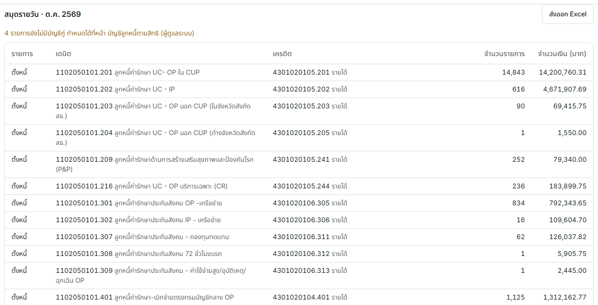
รูป 14 สมุดรายวัน ต.ค. 2569 ข้อความสีส้มบนตารางเตือนว่ามี 4 บรรทัดที่ยังไม่มีบัญชีคู่
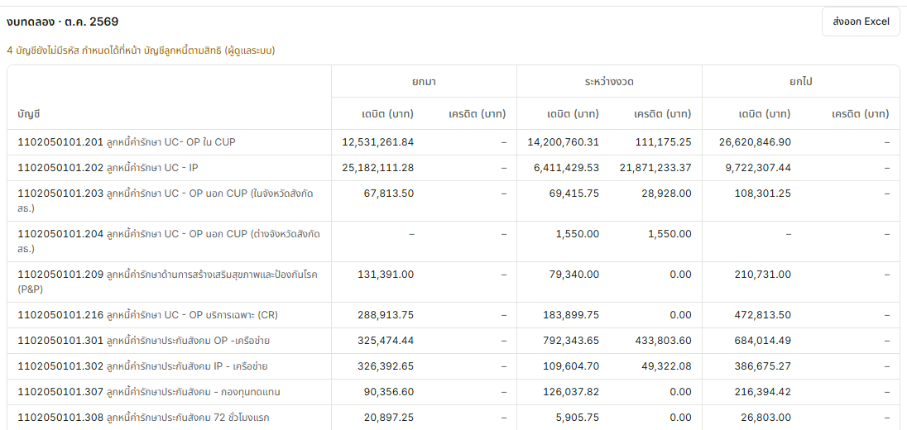
รูป 15 งบทดลอง ต.ค. 2569 คอลัมน์ยกมา ระหว่างงวด ยกไป ฝั่งเดบิตและเครดิต
หมายเหตุ: ตัวอย่างจริงของ ต.ค. 2569
4 บรรทัดที่ยังไม่มีบัญชีคู่คือ (1–2) ตั้งหนี้และกลับรายการของ "ลูกหนี้ไม่ระบุบัญชี" 12 รายการ ยอด 6,490 บาท ซึ่งหักกันเป็น 0 และ (3–4) ส่วนต่างของ 1102050101.402 กรมบัญชีกลาง IP ทั้งได้รับต่ำกว่าและสูงกว่า เพราะบัญชี .402 ยังไม่ได้ตั้งบัญชีส่วนต่าง ผู้ดูแลระบบต้องตั้งที่ ตั้งค่าบัญชี ก่อนปิดงวด
ขั้นตอน ปิดงวด (ผู้ดูแลระบบ)
- กดชื่อผู้ใช้มุมล่างซ้าย เลือก ผู้ดูแลระบบ › ปิดงวดลูกหนี้
- เลือก ปิดถึง เดือนที่ต้องการ (เลือกได้เฉพาะเดือนที่จบแล้ว ระบบปิดต่อเนื่องจากเดือนแรกที่ยังไม่ปิด)
- ตรวจข้อความบนปุ่ม เช่น ปิดงวด ต.ค. 2569 หรือ ปิดงวด ต.ค. 2568 ถึง ต.ค. 2569 แล้วกด ระบบปิดทันที ไม่มีขั้นยืนยัน
- ผลขึ้น
ปิดงวด … แล้ว
และงวดเพิ่มในตาราง "ประวัติการปิดงวด" พร้อมยอดยกไป (ยอดรวมเดบิตของงบทดลอง ณ เวลาปิด)
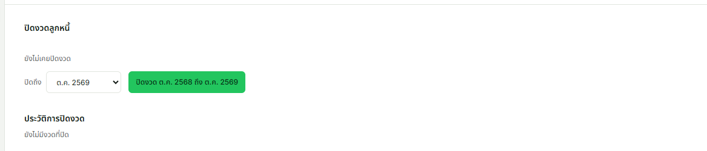
รูป 16 หน้าปิดงวดลูกหนี้ ณ วันที่ทำคู่มือยังไม่เคยปิดงวด ปุ่มจึงเสนอให้ปิด ต.ค. 2568 ถึงเดือนที่เลือกในครั้งเดียว
หลังปิดงวด
- รายการใหม่ที่วันที่ตกในงวดที่ปิดแล้ว (เช่น ปรับปรุงจาก HOSxP รับเงินย้อนหลัง) ถูกเลื่อนไปลงวันแรกของงวดที่เปิด ในรายละเอียดจะเห็น
เลื่อนจาก … เพราะงวดนั้นปิดแล้ว
- เงินโอนที่อยู่ในงวดปิดแล้ว แก้หรือยกเลิกไม่ได้ ตัดหนี้เหมาจ่ายของเดือนที่ปิดไม่ได้
- งบทดลองของงวดที่ปิดแสดง
ปิดงวดแล้ว โดย … เมื่อ …
ถ้ามีข้อความ ยอดปัจจุบันต่างจากตอนปิดงวด … บัญชี เพราะบัญชีคู่ถูกแก้หลังปิด
แปลว่ามีการแก้บัญชีคู่หลังปิด ให้ตรวจกับผู้ดูแลระบบ
- เปิดงวดได้เฉพาะงวดล่าสุด: กด เปิดงวด ในแถวของงวดนั้น กรอก เหตุผล แล้วกด เปิดงวด รายการที่ถูกเลื่อนวันที่เข้างวดถัดไปตอนที่ปิดอยู่จะไม่ถูกเลื่อนกลับ
ข้อความที่อาจเจอ
| ข้อความ | ความหมายและวิธีแก้ |
|---|
ยังมี … รายการ (… บาท) ที่ลงบัญชีถึง … แต่ยังไม่ระบุบัญชี กำหนดบัญชีที่หน้า บัญชีลูกหนี้ตามสิทธิ ก่อนปิดงวด | ปิดไม่ได้จนกว่าทุกรายการมีบัญชี กดลิงก์ "ไปหน้า บัญชีลูกหนี้ตามสิทธิ" ข้างข้อความ |
… บัญชียังไม่มีรหัส … (งบทดลอง) | บัญชีรายได้หรือส่วนต่างของบางบัญชียังไม่ได้ตั้ง แจ้งผู้ดูแลระบบ |
ปิดงวดถึง … แล้ว | เดือนที่เลือกปิดไปแล้ว |
ปิดได้เฉพาะเดือนที่จบแล้ว ตั้งแต่ ต.ค. 2568 | เลือกเดือนที่จบแล้ว |
งวดนี้ถูกปิดไปแล้ว โหลดหน้าใหม่ / เปิดได้เฉพาะงวดล่าสุดที่ปิดอยู่ โหลดหน้าใหม่ | มีคนทำพร้อมกัน โหลดหน้าใหม่ |
ห้ามทำ
- ห้ามกดปิดงวดก่อนตรวจสมุดรายวันและงบทดลอง ปุ่มปิดงวดไม่มีขั้นยืนยัน
- ห้ามปิดงวดก่อนตัดหนี้เหมาจ่ายและบัตรต่างด้าวของเดือนนั้น เพราะตัดย้อนเข้าเดือนที่ปิดไม่ได้
- ห้ามเปิดงวดเพื่อแก้เล็กน้อย ใช้คำขอปรับปรุงลูกหนี้ลงในงวดที่เปิดแทน
3. กติกาการลงบัญชี (ตารางอ้างอิง)
ค่าที่แสดงคือการตั้งค่าในระบบ ณ วันที่ 25 พ.ย. 2569 ผู้ดูแลระบบแก้ได้ที่หน้า บัญชีลูกหนี้ตามสิทธิ ค่าปัจจุบันให้ยึดตามหน้านั้น
ตั้งหนี้และกติกาเพดาน/สัดส่วน
ตั้งหนี้ทุกบัญชีลง Dr ลูกหนี้ / Cr รายได้คู่ของบัญชี บางกลุ่มสิทธิมีเพดานหรือสัดส่วน ส่วนที่เกินระบบลงส่วนต่างให้ตอนตั้งหนี้
| กรณี | บัญชีลูกหนี้ | กติกา | ส่วนที่เกินลง (Dr) |
|---|
| UC ผู้ป่วยนอก หน่วยบริการประจำนอก CUP ในจังหวัด สังกัด สธ. | 1102050101.203 | ลูกหนี้ไม่เกิน 700 บาทต่อครั้ง | 4301020105.239 |
| UC ผู้ป่วยนอก หน่วยบริการประจำในจังหวัด นอกสังกัด สธ. | 1102050102.201 | ลูกหนี้ไม่เกิน 700 บาทต่อครั้ง | 4301020105.239 |
| ประกันสังคม ผู้ป่วยนอก โรงพยาบาลหลัก (เครือข่าย) | 1102050101.301 | ลูกหนี้ 45% ของค่ารักษา | 4301020106.315 |
| ประกันสังคม ผู้ป่วยใน โรงพยาบาลหลัก (เครือข่าย) | 1102050101.302 | ลูกหนี้ 55% ของค่ารักษา | 4301020106.317 |
| UC ผู้ป่วยนอกใน CUP ที่มีรายการ HC หรือ INST | แยกจาก .201 ไป 1102050101.216 | ยอด HC/INST ตั้งเป็นหนี้แยก (เลขที่ลูกหนี้ลงท้าย :CR) | – |
ตัดหนี้ด้วยเงินโอนและเงินรับล่วงหน้า
| บัญชีลูกหนี้ | ตัดด้วย (Dr) | ไม่พอ ลงส่วนต่าง (Dr) | หน้า |
|---|
1102050101.201 UC OP ใน CUP | 4301020105.214 | 4301020105.229 | ตัดหนี้เหมาจ่าย |
1102050101.209 P&P | 4301020105.217 | 4301020105.257 | ตัดหนี้เหมาจ่าย |
1102050101.501 / .502 ต่างด้าว (สิทธิ 99) | 2103010103.502 เงินรับล่วงหน้า | 4301020106.505 / .507 | บัตรประกันสุขภาพต่างด้าว |
- เงินโอนจาก SMT ที่เป็นงบปีก่อนวันโอน ลง
3102010102.201 กำไร/ขาดทุนสะสมจากข้อผิดพลาดเงินกองทุน UC ปีก่อน (Dr เงินฝากธนาคาร / Cr 3102010102.201)
- บัญชีรายได้และส่วนต่างปิดเข้า "ผลสะสมปีงบก่อน" ทุก 1 ต.ค. ในงบทดลอง บัญชีลูกหนี้ เงินฝาก และเงินรับล่วงหน้ายกยอดสะสม
บัญชีที่ตัดด้วย STM และบัญชีส่วนต่าง
| บัญชีลูกหนี้ | รายได้คู่ | ได้รับต่ำกว่า (Dr) | ได้รับสูงกว่า (Cr) |
|---|
1102050101.202 UC IP | 4301020105.202 | 4301020105.231 | 4301020105.232 |
1102050101.216 UC OP บริการเฉพาะ (CR) | 4301020105.244 | 4301020105.258 | 4301020105.260 |
1102050101.217 UC IP บริการเฉพาะ (CR) | 4301020105.245 | 4301020105.251 | 4301020105.252 |
1102050101.222 OP Refer | 4301020105.263 | ยังไม่กำหนด | ยังไม่กำหนด |
1102050101.401 กรมบัญชีกลาง OP | 4301020104.401 | 4301020104.405 | ยังไม่กำหนด |
1102050101.402 กรมบัญชีกลาง IP | 4301020104.402 | ยังไม่กำหนด | ยังไม่กำหนด |
"ยังไม่กำหนด" ทำให้สมุดรายวันเตือน "ยังไม่มีบัญชีคู่" เมื่อมีส่วนต่างของบัญชีนั้น ผู้ดูแลระบบควรตั้งให้ครบก่อนปิดงวด
กลุ่มเรียกเก็บของแต่ละบัญชี
ค่าตั้งต้นมาจากโปรแกรม Claim ของการเงิน ใช้ในหน้า สถานที่เรียกเก็บ
| กลุ่ม | บัญชีลูกหนี้ |
|---|
| 2 เรียกเก็บในจังหวัด/รพ.ต้นสังกัด | 1102050101.203 .301 .302 .503 .504 · 1102050102.110 .111 .201 |
| 3 สนง.ประกันสังคม | 1102050101.303 .304 .307 .308 .309 .310 · 1102050102.301 .302 |
| 4 eclaim สปสช. / สกส. | 1102050101.202 .204 .216 .217 .222 .223 .224 .401 .402 · 1102050102.801–.804 |
| 5 กระทรวงสาธารณสุข | 1102050101.505 .506 .701–.704 |
| 6 ตัดเงินเหมาจ่ายรายหัว | 1102050101.201 .501 .502 |
| 7 ตัดเงินกองทุน PP | 1102050101.209 |
| 8 เบิกต้นสังกัด | 1102050102.108 .109 |
| 9 เคลมบริษัทประกัน | 1102050102.602 .603 (พรบ.รถ) |
| 10 ค้างชำระ | 1102050102.106 .107 (ชำระเงินเอง) |
| 12 ตรวจสุขภาพประจำปี | 1102050101.103 · 1102050102.103 |
| 14 อื่นๆ | 1102050101.109 |
| 13 กองทุนไต, 15 กรณีซื้อบริการ | ไม่มีบัญชีที่มีรายการอยู่ในกลุ่มนี้ ณ วันที่ทำคู่มือ (บัญชีที่ยังไม่มีรายการ ดูได้โดยติ๊ก "แสดงทุกบัญชี" ที่ตั้งค่าบัญชี) |
.501/.502 อยู่ในกลุ่ม 6 แต่ตัดด้วยเงินรับล่วงหน้าบัตรต่างด้าว ไม่ได้ตัดในหน้าตัดหนี้เหมาจ่าย
บัญชีลูกหนี้ตามกลุ่มสิทธิ (ค่าตั้งต้น)
| กลุ่มสิทธิ | ผู้ป่วยนอก | ผู้ป่วยใน |
|---|
| UC (รวม WEL) | ใน CUP .201 · ในจังหวัด สธ. .203 · ในจังหวัดนอก สธ. 1102050102.201 · ต่างจังหวัด/ไม่พบหน่วยบริการ .216 | .202 |
| P&P | .209 | – |
| ข้าราชการ กรมบัญชีกลาง | .401 | .402 |
| ประกันสังคม | เครือข่าย .301 (45%) · อื่น .309 | เครือข่าย .302 (55%) · อื่น .308 |
| อปท. | 1102050102.801 | 1102050102.802 |
| พรบ.รถ | 1102050102.602 | 1102050102.603 |
| ต่างด้าว | ใน CUP .501 · อื่น .503 | ใน CUP .502 · อื่น .504 |
| ชำระเงินเอง | 1102050102.106 | 1102050102.107 |
| สวัสดิการ (pttype 26, 29, 32) | ไม่ตั้งลูกหนี้ |
รหัสที่ขึ้นด้วยจุดคือ 1102050101.xxx รายการเต็มและกลุ่มอื่น (เบิกต้นสังกัด BKK BMT STP ฯลฯ) ดูที่หน้า บัญชีลูกหนี้ตามสิทธิ
4. ลำดับที่ต้องระวังและข้อผิดพลาดที่พบบ่อย
- ดึงจาก SMT ก่อนตัดหนี้เหมาจ่ายเสมอ วงเงินตัด .201/.209 มาจากเงินโอนที่ดึงไว้ ถ้ายังไม่ได้ดึง ยอดที่ขาดจะลงส่วนต่าง .229/.257 ทันทีและแก้กลับไม่ได้นอกจากคำขอปรับปรุงทีละราย
- ตัดเรียงเดือน เก่าไปใหม่ ทั้งตัดหนี้เหมาจ่ายและบัตรต่างด้าว
- อย่าปิดงวดก่อนตรวจ ปุ่มปิดงวดบันทึกทันที และหลังปิดจะตัดหนี้เหมาจ่ายหรือแก้เงินโอนของเดือนนั้นไม่ได้
- ตัดผิดแก้ด้วยคำขอปรับปรุงลูกหนี้ ชุดตัดด้วย STM ตัดเหมาจ่าย และตัดบัตรต่างด้าว ไม่มีปุ่มยกเลิก ไฟล์ STM ที่ใช้ตัดแล้วก็ลบไม่ได้
- HOSxP เปลี่ยนหลังตัดหนี้แล้ว รอบกลางคืนยังลงรายการปรับปรุงตามยอดใหม่ของ HOSxP ทำให้หนี้ที่ตัดครบแล้วกลับมามีคงเหลือ (บวกหรือติดลบ) ปุ่ม "ดึงใหม่" ใช้กับรายที่ตัดแล้วไม่ได้ ตรวจรายเหล่านี้แล้วแก้ด้วยการบันทึกรับเงินเพิ่มหรือคำขอปรับปรุงลูกหนี้
- "ยังไม่มีบัญชีคู่" (สมุดรายวัน) แปลว่าบรรทัดนั้นขาดรหัสบัญชีรายได้คู่ หรือบัญชีส่วนต่าง ของบัญชีลูกหนี้นั้น บนหน้าจอเห็นเป็น "ยังไม่กำหนด" ผู้ดูแลระบบแก้ที่ บัญชีลูกหนี้ตามสิทธิ › ตั้งค่าบัญชี
- "บัญชียังไม่มีรหัส" (งบทดลอง) คือเรื่องเดียวกันที่นับเป็นจำนวนบัญชี และ "ไม่ระบุบัญชี" (ตารางยอดลูกหนี้) คือหนี้ที่ระบบหาบัญชีลูกหนี้ไม่ได้ เพราะ pttype ยังไม่จับคู่กลุ่มสิทธิหรือไม่มีกติกา ผู้ดูแลระบบแก้ที่หัวข้อ "ยังไม่มีบัญชี" ในหน้าเดียวกัน แล้ว "คำนวณบัญชีใหม่"
- บัตรต่างด้าว บัตรชนิดที่ยังไม่กำหนดยอดทำให้ตัดหนี้สิ้นเดือนไม่ได้ทั้งเดือน ให้ผู้ดูแลระบบกำหนดยอดก่อน
5. คำถามที่พบบ่อยและการแก้ปัญหา
- หนี้ของ visit เมื่อวานยังไม่ขึ้นในสมุด
- รอบตั้งหนี้คือ 01:00 น. ผู้ป่วยนอกต้องมีใบลูกหนี้ ผู้ป่วยในต้องล็อกรายการการเงินแล้ว ต้องการทันทีกด "ดึงยอดล่าสุด" ดูเวลาดึงล่าสุดที่บรรทัด "ลูกหนี้จาก HOSxP ดึงล่าสุด" ถ้าเวลานี้ไม่เปลี่ยนเกิน 1 วัน หรือมีข้อความ "ดึงยอดเมื่อ … ไม่สำเร็จ" ซ้ำ แจ้งทีมพัฒนา
- STM จ่ายแต่หน้าตัดลูกหนี้ขึ้น "ยังไม่ลงสมุด"
- หนี้ยังไม่ถูกตั้ง ตรวจใน HOSxP ว่าออกใบลูกหนี้/ล็อกรายการแล้ว รอรอบกลางคืนแล้วเปิดไฟล์ STM ตัดอีกครั้ง ระบบตัดเฉพาะรายที่ยังไม่ตัด
- ตัดหนี้ด้วยวันที่หรือเลขที่ใบเสร็จผิด
- ยกเลิกชุดไม่ได้ ส่งคำขอปรับปรุงลูกหนี้ของรายที่ผิด ถ้าผิดทั้งไฟล์หลายร้อยราย แจ้งทีมพัฒนาก่อนทำ
- ตัดหนี้เหมาจ่ายไปแล้ว แต่เงินโอนเพิ่งเข้า
- เงินโอนที่ดึงทีหลังเป็นวงเงินของเดือนถัดไปในปีงบเดียวกัน หนี้ที่ลงส่วนต่างไปแล้วไม่ถูกตัดซ้ำ ถ้าต้องการย้ายยอดกลับ ต้องทำคำขอปรับปรุงลูกหนี้
- กด "ดึงจาก SMT" แล้วยอดไม่ครบ
- ดูสรุปว่ามี "กองทุนยังไม่จับคู่" หรือ "รอโอน" ไหม กองทุนยังไม่จับคู่ให้ผู้ดูแลระบบจับคู่แล้วดึงใหม่ รอโอนจะเข้าเมื่อ SMT โอนแล้ว ถ้าเงินเข้าธนาคารแต่ไม่มีใน SMT ใช้ "เพิ่มเอง"
- ต้องการแก้เพดาน 700 บาท สัดส่วนประกันสังคม หรือบัญชีของสิทธิ
- ผู้ดูแลระบบแก้กติกาที่ บัญชีลูกหนี้ตามสิทธิ แล้วกด "ดูผลก่อนปรับ" และยืนยัน (ภาคผนวก)
- ต้องการเปลี่ยนบัญชีส่วนต่างเหมาจ่าย .229 / .257
- หน้าจอยังไม่มีช่องแก้ค่านี้ แจ้งทีมพัฒนา
- หน้าแสดง "โหลดข้อมูลไม่สำเร็จ" หรือปุ่มตอบ "ไม่สำเร็จ (HTTP 500)"
- กด "ลองอีกครั้ง" หรือโหลดหน้าใหม่ ถ้าเกิดซ้ำ แจ้งทีมพัฒนา พร้อมชื่อหน้า เวลา และข้อความที่เห็น
- นำเข้าอัตโนมัติขึ้นว่าไม่พบ extension หรือ "มีเวอร์ชันใหม่"
- ทำตามขั้นตอนติดตั้งในหน้าต่าง (ดาวน์โหลด zip แตกไฟล์ไว้ในโฟลเดอร์ถาวร แล้ว Load unpacked ที่ chrome://extensions) เวอร์ชันใหม่ให้ติดตั้งทับแบบเดียวกัน
6. ภาคผนวกสำหรับผู้ดูแลระบบ
เปิดจากเมนูโปรไฟล์ › ผู้ดูแลระบบ › บัญชีลูกหนี้ตามสิทธิ หน้านี้มีหัวข้อเรียงตามนี้
ดึงยอดย้อนหลัง
เลือกช่วงเดือน ตั้งแต่ ถึง แล้วกด ดึงย้อนหลัง ระบบดึงทีละเดือนจากเก่าไปใหม่ และหยุดที่เดือนแรกที่ไม่สำเร็จ เดือนที่ปิดงวดแล้วดึงไม่ได้ ใช้เมื่อเริ่มระบบหรือหลังแก้ข้อมูลย้อนหลังใน HOSxP จำนวนมาก
คำนวณบัญชีใหม่: ดูผลก่อนปรับ แล้วยืนยัน
- หลังแก้กติกาบัญชีหรือกลุ่มสิทธิ กด ดูผลก่อนปรับ ระบบคำนวณอย่างเดียว ยังไม่เปลี่ยนสมุด
- อ่านสรุป: ย้ายบัญชี … ราย · ส่วนต่างตามเพดาน/สัดส่วน · กลับรายการสิทธิที่ไม่ตั้งลูกหนี้ · ไม่มีกติกา คงบัญชีเดิม · แยก HC/INST จาก .201 ไป .216 · ตัดหนี้แล้ว ไม่ลงส่วนต่าง/ไม่แยก · ข้อมูลสิทธิเปลี่ยนตาม HOSxP และตารางบัญชีเดิม → บัญชีใหม่
- กด ยืนยันปรับสมุดลูกหนี้ เมื่อผลถูกต้อง (หรือ ปิด) ผลขึ้น
ปรับสมุดแล้ว · ย้ายบัญชี … แถว · ลงรายการใหม่ … แถว
ถ้าขึ้น "ไม่มีรายการที่ต้องปรับ" ไม่ต้องทำอะไร
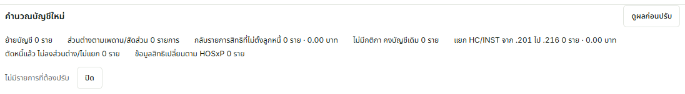
รูป 17 ผลของ "ดูผลก่อนปรับ" ณ วันที่ทำคู่มือ ไม่มีรายการที่ต้องปรับ จึงไม่มีปุ่มยืนยัน
ห้ามทำ
- ห้ามกดยืนยันปรับสมุดโดยไม่อ่านตาราง "บัญชีเดิม → บัญชีใหม่" ผลกระทบทุกเดือนที่ยังเปิดอยู่ ควรทำก่อนปิดงวด
บัญชีตามกลุ่มสิทธิ (กติกาบัญชี)
หนึ่งแถวต่อ กลุ่มสิทธิ × ประเภท (OP/IP) × หน่วยบริการประจำ เพิ่มหรือแก้ด้วยฟอร์มด้านบน: กลุ่มสิทธิ ประเภท หน่วยบริการประจำ (ทุกที่ / หน่วยหลัก / ในจังหวัด สธ. / ในจังหวัดอื่น / ต่างจังหวัด / ไม่พบ) บัญชี และใส่ เพดานลูกหนี้ (บาท) หรือ ลูกหนี้ (%) อย่างใดอย่างหนึ่ง แล้วกด บันทึก แก้แล้วต้องกดคำนวณบัญชีใหม่ หนี้เดิมจึงจะย้าย
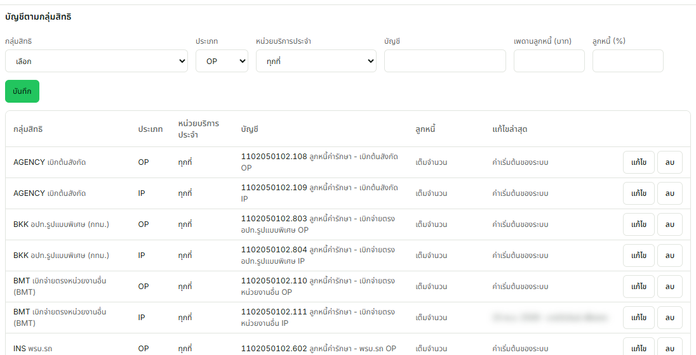
รูป 18 บัญชีตามกลุ่มสิทธิ คอลัมน์ "ลูกหนี้" บอกว่าเต็มจำนวน มีเพดาน หรือเป็นสัดส่วน ช่องผู้แก้ไขล่าสุดถูกเบลอ
หัวข้อย่อย ยังไม่มีบัญชี แสดงหนี้ที่หาบัญชีไม่ได้พร้อมสาเหตุและปุ่ม จับคู่ หรือ เพิ่มกติกา ณ วันที่ทำคู่มือขึ้นว่า "ทุกรายการในสมุดลูกหนี้มีบัญชีแล้ว"
กลุ่มสิทธิของ pttype
ทุก pttype ต้องจับคู่กับกลุ่มสิทธิ เลือกในช่องท้ายแถว (ติ๊ก "เฉพาะที่ยังไม่จับคู่" เพื่อดูเฉพาะที่ขาด) pttype ใหม่ใน HOSxP ที่ยังไม่จับคู่จะทำให้หนี้เป็น "ไม่ระบุบัญชี"
ตั้งค่าบัญชี
ต่อบัญชีลูกหนี้: รายได้คู่ ส่วนต่างค่ารักษาสูงกว่าข้อตกลง (Dr) ส่วนต่างค่ารักษาต่ำกว่าข้อตกลง (Cr) ตัดหนี้ด้วย STM กลุ่มเรียกเก็บ ตัดอัตโนมัติ (Dr) กด แก้ไข ท้ายแถว แก้แล้วกด บันทึก ติ๊ก "แสดงทุกบัญชี" เพื่อดูบัญชีที่ยังไม่มีรายการ
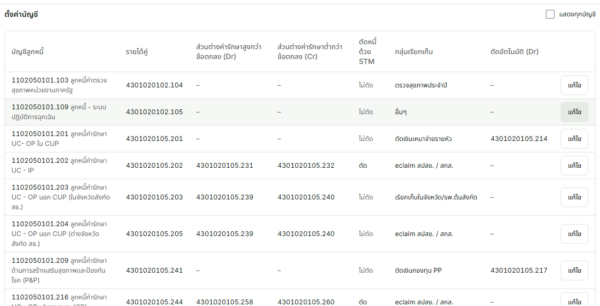
รูป 19 ตั้งค่าบัญชี เช่น .201 ไม่ตัดด้วย STM แต่ตัดอัตโนมัติด้วย 4301020105.214 ส่วน .202 ตัดด้วย STM และมีบัญชีส่วนต่างทั้งสองข้าง
หมายเหตุ
บัญชีส่วนต่างของการตัดเหมาจ่าย (.229 ของ .201 และ .257 ของ .209) ไม่อยู่ในตารางนี้ เปลี่ยนต้องแจ้งทีมพัฒนา
จับคู่กองทุนใน SMT
ที่หน้า รับเงิน › เงินโอนที่ได้รับ หัวข้อ กองทุนใน SMT กองทุนที่ "ยังไม่จับคู่" กด จับคู่บัญชี เลือกบัญชี (ค่าเริ่มต้นคือบัญชีที่ SMT ระบุ) แล้วกด บันทึก หรือกด ไม่ใช้กองทุนนี้ สำหรับกองทุนที่ไม่ใช่รายได้ของสมุดนี้ จากนั้นกด ดึงจาก SMT อีกครั้ง
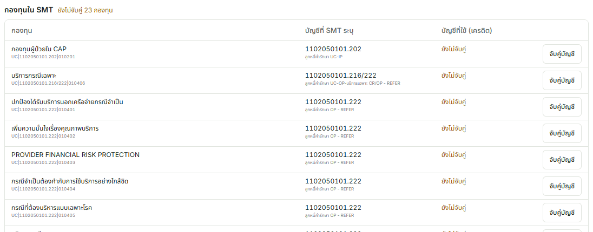
รูป 20 กองทุนใน SMT ณ วันที่ทำคู่มือยังไม่จับคู่ 23 กองทุน รายการโอนของกองทุนเหล่านี้จึงยังไม่อยู่ในยอดรับต่อบัญชี
ปิดงวดลูกหนี้
ดูขั้นตอนที่หัวข้อ ซ ปิดได้เฉพาะเดือนที่จบแล้ว ต่อเนื่องจากเดือนแรก ปิดไม่ได้ถ้ายังมีรายการที่ไม่ระบุบัญชีในช่วงนั้น เปิดงวดได้เฉพาะงวดล่าสุดพร้อมเหตุผล
ชนิดบัตรต่างด้าว
หน้า บัตรประกันสุขภาพต่างด้าว แท็บ ชนิดบัตร (เห็นเฉพาะผู้ดูแลระบบ) ต่อชนิด: ชื่อ อายุ (เดือน) เงินรับล่วงหน้าต่อใบ (บาท) ใช้งาน หมายเหตุ แล้วกด บันทึก ตั้งยอดแล้วบัตรชนิดนั้นที่ยังไม่มียอดจะได้ยอดตามจำนวนใบ บัตรที่มียอดแล้วไม่เปลี่ยน